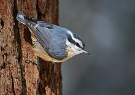
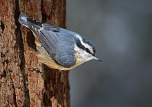

| Red-breasted Nuthatch | |
|---|---|
|  | |
| Female | |
| Conservation status | |
| Binomial name | |
| Sitta canadensis Linnaeus, 1766 |
| Red-breasted Nuthatch | |
|---|---|
|  | |
| Female | |
| Conservation status | |
| Binomial name | |
| Sitta canadensis Linnaeus, 1766 |
The Red-breasted Nuthatch, Sitta canadensis, is a small songbird.
Adults have blue-grey upperparts with reddish underparts; they have a white face with a black stripe through the eyes, a white throat, a straight grey bill and a black crown. This bird is smaller than the White-breasted Nuthatch.
Their breeding habitat is coniferous forests across Canada, Alaska and the northeastern and western United States. They were formerly resident on Isla Guadalupe, an island off the western coast of Mexico, but appear to have been extirpated; the last known record of the species on the island dates from 1971.[2] They excavate a nest in dead wood, often close to the ground. They smear the entrance to their nest with pitch.
These birds are often permanent residents, but they regularly migrate into the southern United States if the food supply fails. There are records of vagrants occurring as far south as the Mexican states of Sinaloa and Nuevo Leon.[2] It is also a very rare vagrant to western Europe, and one bird successfully overwintered in Great Britain.
They forage on the trunk and large branches of trees, often descending head first, sometimes catching insects in flight. They mainly eat insects and seeds, especially from conifers.
The call is like a tin trumpet. It is similar to that of the White-breasted Nuthatch, but higher in pitch.

{kind=link}
{kind=link}